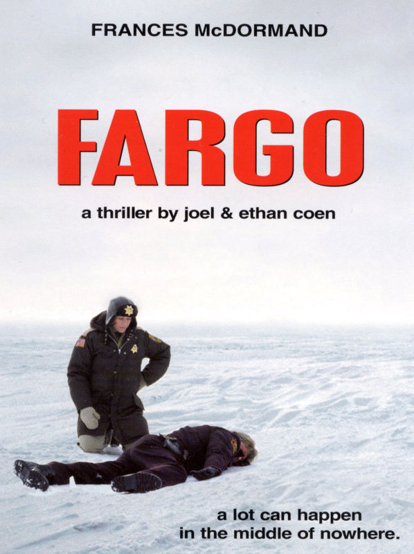
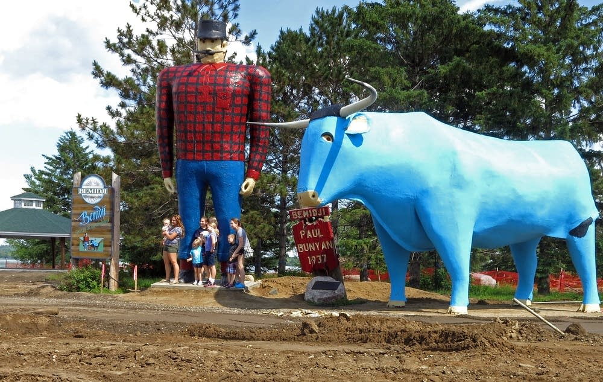
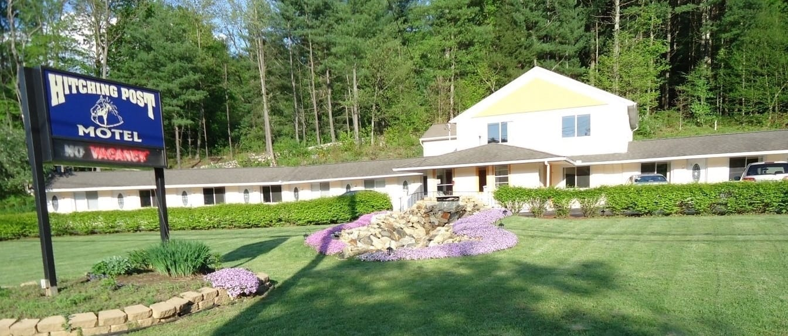

Most Viewed
Fargo

Synopsis:
"Fargo" is a reality-based crime drama set in Minnesota in 1987. Jerry Lundegaard (William H. Macy) is a car salesman in Minneapolis who has gotten himself into debt and is so desperate for money that he hires two thugs (Steve Buscemi), (Peter Stormare) to kidnap his own wife. Jerry will collect the ransom from her wealthy father (Harve Presnell), paying the thugs a small portion and keeping the rest to satisfy his debts. The scheme collapses when the thugs shoot a state trooper.The Coens’ wickedly inventive thriller was shot mainly around Brainerd (which was the original title), Minnesota but as luck would have it, a particularly mild winter meant that film-making had to move north for snow scenes, as far as Grand Forks in North Dakota.
The ‘based on a true story’ myth supposedly had people descending on Brainerd with shovels, eager to search for the buried cash.
Sadly, most of the locations have now gone, including the King of Clubs, the pool bar where financially desperate car salesman Jerry Lundegaard (William H Macy) meets with the two shady characters (Steve Buscemi and Peter Stormare) to arrange the kidnapping of his wife, which stood at 957 Central Avenue NE at 3rd Avenue NE, northeast Minneapolis. It’s been demolished, to be replaced by housing.
Gone, too, is ‘Gustafson Motors’, where Jerry works for his domineering father-in-law Wade (Harve Presnell) as salesman. It was for many years Wally McCarthy Oldsmobile, a plot now occupied by the campus HQ of Best Buy, on the northeast junction of I-494 at Penn Avenue in Richfield, a southern suburb of Minneapolis.
The ‘Welcome to Brainerd’ giant statue of Paul Bunyan was built for the film (and subsequently dismantled) on Pembina County Highway 1, four miles west of Bathgate, North Dakota, up towards the Canadian border.
For mystified non-US readers, Paul Bunyan is a legendary giant lumberjack, usually accompanied by Babe the Blue Ox, credited with superhuman exploits.
There’s an 18-feet-tall Bunyan, with Ox, at Bemidji, Minnesota, which, is claimed to be second only to Mount Rushmore as the most photographed statue in the USA.
 Paul Bunyan Statue, Bemidji, MinnesotaThere was a 26-feet-tall seated statue of Paul Bunyan in Brainerd in the Paul Bunyan Amusement Center (billed as ‘The World’s Largest Talking Animated Man’, he amazingly greeted children by name), which closed in 2003. The exhibits were moved to This Old Farm Pioneer Village and Paul Bunyan Land, 17553 State Highway 18, seven miles east of Brainerd (though the website no longer mentions the animated giant).
The ‘Blue Ox’ truckstop, where the two kidnappers indulge themselves with a couple of hookers, is Stockmen's Truck Stop, 501 Farwell Avenue, South St Paul and – great news – it’s one of the few locations still in existence, and still a much-loved place to stop and get a good meal.
But it’s back to losses with Ember’s restaurant, which stood at 7527 Wayzata Boulevard at Pennsylvania Avenue South in the St Louis Park area of Minneapolis (where the Coens grew up). This is where Jerry sits down with the controlling Wade to discuss how the ransom for his wife, Jean, should be paid.
The cabin where Jean was held captive, and where the woodchipper is put to inventive use, stood on Square Lake in May, Minnesota. It’s, need I say, since been sold and relocated.
‘Brainerd Police Station’ was the old Edina Police Station, 4801 West 50th Street, Edina, which has inevitably been completely rebuilt.
When Marge Gunderson (Frances McDormand) gets a lead to the kidnappers’ companions from the ‘Blue Ox’, she heads off to interview them at the Lakeside Club, 10 Old Wildwood Road, in Mahtomedi. It’s not, as you might have assumed a naughty place, but a smart family restaurant and still in business – but only just. It’s due to close and, yes, be demolished in early 2015.
Charm personified, Carl Showalter (Steve Buscemi) takes his companion to the ‘Carlton Celebrity Room’, which stood at 8350 24th Avenue South in Bloomington, Minnesota, where José Feliciano is performing. The Vegas-style dinner-theatre venue closed in 1986, and the scene was staged in the Chanhassen Dinner Theatre, 501 West 78th Street, Chanhassen. Hooray – it’s still there! The city of Chanhassen is approximately 25 minutes southwest of downtown Minneapolis, and the theatre located two blocks north of Minnesota State Highway 5 on Great Plains Boulevard.
Carl helps himself to a license plate from the parking lot of the Minneapolis-Saint Paul International Airport, pausing to quibble over the $4 parking fee.
Fargo film location: 3rd Street South, Hallock Fargo film location: Mr Mohra's house in the shadow of the grain elevator: 3rd Street South, Hallock | Photograph: Google Maps He goes on to set up a ransom drop on the roof of the ‘Radisson Hotel’. In fact, the rooftop where Wade unexpectedly turns up demanding the return of his daughter is atop the parking structure on 3rd Avenue South at South 8th Street, downtown Minneapolis.
The house of Mr Mohra, who gives the police information about the funny looking little guy while clearing away snow, is on 3rd Street South at the corner of Bryan Avenue in the shadow of the giant grain elevator in Hallock, on Hwy 75, in the far northwest corner of Minnesota.
Fargo film location: Hitching Post Motel, Forest Boulevard North, Forest Lake Fargo film location: Jerry is apprehended in the motel outside 'Bismarck': Hitching Post Motel, Forest Boulevard North, Forest Lake | Photograph: Google Maps
And something else which still exists is the motel “outside of Bismarck”, where the police finally catch up with the fugitive Jerry. It’s the Hitching Post Motel, 23855 Forest Boulevard North, Forest Lake, north of Minneapolis.
 Hitching Post Motel, Forest Lake MinnesotaEnough of the negativity. There is finally something to see in Fargo itself, even if there was no filming there. Head off to the Fargo-Moorhead Convention & Visitors Bureau, 2001 44th Street South, Fargo, North Dakota, to see copies of the script and memorabilia from the film – along with the movie’s actual woodchipper.